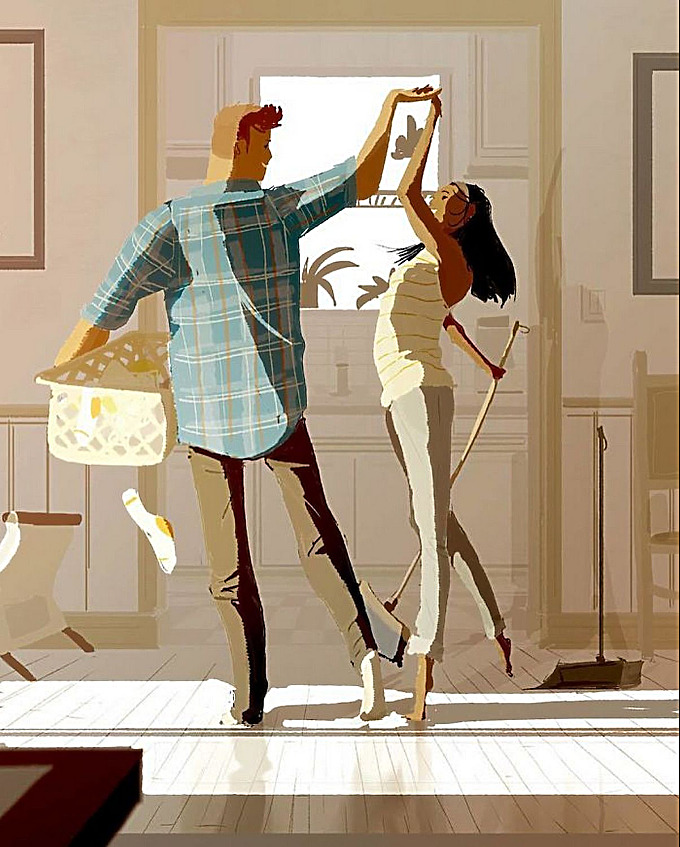

Revue du site de rencontre Meetic.fr
Fondé en 2001 et basé à Boulogne-Billancourt, France, Meetic.fr est le meilleur site de rencontre en ligne en France. Depuis ses modestes débuts, il est devenu le plus grand site de rencontres en ligne d'Europe.
Suite à l'acquisition des activités européennes de Match.com, le site a explosé en popularité et compte des millions de membres dans toute l'UE. Les fonctionnalités et le design de Meetic.fr sont similaires à ceux des autres membres du réseau Meetic comme Match. De tous les sites Meetic que j'ai vus, cependant, la conception du site Web de Meetic.fr est de loin la meilleure.
Le processus d'inscription était particulièrement attrayant. Si les fonctionnalités de Meetic.fr ne sont pas terriblement excitantes, elles sont fiables. Cependant, vous aurez besoin d'un abonnement premium pour faire beaucoup de choses sur le site. Si vous êtes prêt à payer et que vous parlez français, je vous recommande d'essayer Meetic.fr.
Pour commencer, sélectionnez votre sexe et votre sexe et entrez votre date de naissance. Ensuite, vous serez confronté à des questions concernant votre personnalité, votre style de vie et votre apparence, ainsi que vos critères de correspondance idéaux. La présentation de ces questions était une superbe conception Web; Je souhaite que tous les sites de rencontres ressemblent à ça!
Dans cette section, vous importerez également une photo à un moment donné, et vous terminerez en écrivant un court texte de présentation sur vous-même. Dans l'ensemble, cela m'a pris environ 10 minutes.
Pour compléter votre profil, il y a d'autres questions à répondre sur vous-même. Vous pouvez également créer un petit quiz que vos visiteurs pourront répondre, choisir des questions dans une longue liste ou les créer vous-même.